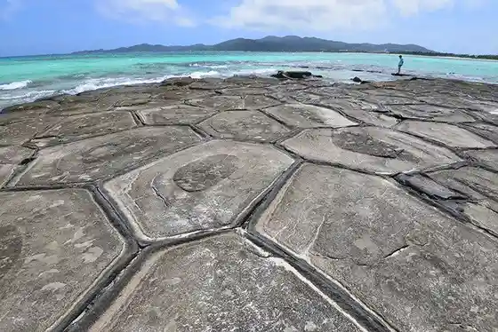

Hate no Hama
Kumejima, Okinawa · 098-985-7131 · Official / source link
Kumejima O Shima no Tatami Ishi
Kumejima, Okinawa · Official / source link

Iifu Beach
Kumejima, Okinawa · 098-985-7131 · Official / source link
Hi Ya Tei Banta
Kumejima, Okinawa · Official / source link
Kumejima Umigame Kan
Kumejima, Okinawa · 098-985-7513 · Official / source link
Sorui Farm FARMO
Kumejima, Okinawa · 098-996-7172 · Official / source link
Uesu Ie House
Kumejima, Okinawa · Official / source link
Miifuga
Kumejima, Okinawa · Official / source link
Kumejima
Kumejima, Okinawa · 098-985-7131 · Official / source link
Gushikawa Castle Ruins (Kumejima) (Kuni Shitei Historic Site)
Kumejima, Okinawa · Official / source link
Kome Shima Shuzo
Kumejima, Okinawa · 098-985-2326 · Official / source link
Shinri Hama
Kumejima, Okinawa · 098-851-7973 · Official / source link
Ippan Shadanhojin Kumejima Tourism Association
Kumejima, Okinawa · 098-851-7973 · Official / source link
Kumejima Tsumugi Village Yuimaru Kan
Kumejima, Okinawa · 098-985-8333 · Official / source link
Tenko Miya
Kumejima, Okinawa · 098-851-7973 · Official / source link
Kumejima Tsumugi Workshop
Kumejima, Okinawa · 098-985-2153 · Official / source link
Kumejima Hotaru Kan
Kumejima, Okinawa · 098-896-7100 · Official / source link
Kumejima Uma Ranch
Kumejima, Okinawa · 080-6491-1950 · Official / source link
Kyu Nakazato Magiri Kuramoto Ato
Kumejima, Okinawa · Official / source link
Taiyo Yakkyoku
Kumejima, Okinawa · 098-985-4401 · Official / source link